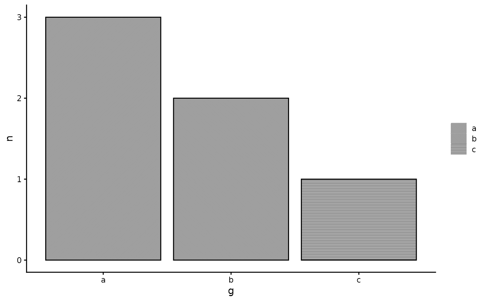

Map a discrete variable to the screen aesthetic of geom_halftone() and of any layer wrapped in
with_halftone(). A screen specification is a string "angle|shape|tone|line_angle": the lattice angle in
degrees, the dot shape (circle, square, diamond, or line to hatch that group), a tone multiplier (0.5
prints half the ink, which is how an ordinal scale is drawn in one ink), and the
hatch angle used when the layer is a line screen. A bare number is an angle. Specifications are absolute. If the
layer has an angle, it is added.
Usage
scale_screen_discrete(..., grid = c("hex", "square"), name = waiver())
scale_screen_manual(values, ..., name = waiver())Arguments
- ...
Passed to
ggplot2::discrete_scale().- grid
Lattice of the layer, which sets the angle period.
- name
The name of the scale. Used as the axis or legend title. If
waiver(), the default, the name of the scale is taken from the first mapping used for that aesthetic. IfNULL, the legend title will be omitted.- values
Character or numeric vector of screen specs, one per level.
Details
scale_screen_discrete() uses a recipe in which consecutive screens differ in both angle and shape: three angles
spaced over the lattice period (60 degrees for hex), and hatch angles 45, 135, 0, 90 and so on for line screens.
scale_screen_manual() takes your own specifications, for example c("45|line", "135|line", "15|circle") to
mix hatching and dots in one layer. Angle alone distinguishes three screens. For more groups, vary shape and
tone, or add a second ink.
Examples
d <- data.frame(g = c("a", "b", "c"), n = c(3, 2, 1))
ggplot2::ggplot(d, ggplot2::aes(g, n, screen = g)) +
with_halftone(ggplot2::geom_col(fill = "black", colour = "black"), shape = "line") +
scale_screen_discrete(name = NULL) + ggplot2::theme_classic() + theme_halftone()
